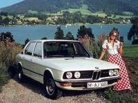

Первые модели
 BMW R32
BMW R32
Первый из них – R32 – появляется в 1923 году, и сразу же обретает высокую репутацию благодаря своим скоростным качествам и надежности. На ниве производства собственно двигателей предпринимателей также ждет невиданный успех, так как оборудованный двигателем BMW самолет, управляемый пилотом Францом Димером, в 1919 году устанавливает мировой рекорд высоты полета – 9760 метров. Помимо этого компания заключает секретный договор с СССР на поставку ей авиадвигателей, и самолеты Союза также ставят рекорды.
1928 год ознаменовывается приобретением новых заводов в городе Айзенах, федеральная земля Тюрингия, и вместе с этим лицензии на производство малолитражек Dixi.
BMW Dixi
Собственно Dixi становится первым автомобилем BMW. Его низкая цена и экономичность обеспечивает в разрушенной войной и финансовым кризисом Германии высокие продажи. Слава BMW и ее моторов растет за счет новых достижений, например, перелета Вольфгангом фон Гронау через Атлантический океан на гидросамолете и мирового рекорда скорости для мотоциклов, поставленного Эрнстом Хенне на R12, оснащенном новейшими конструкторскими решениями BMW.
Промежуток между двумя Мировыми войнами в истории BMW отмечен также моделями 303 и 328.
BMW 303
Последняя являлась спортивным автомобилем, который оставлял далеко позади своих конкурентов из той же ниши и являлся неоднократным призером всевозможных гоночных соревнований. В эти же годы сформировалась концепция, которой компания следует до сих пор, - "Автомобиль для водителя", в противовес мерседесовской "Автомобиль для пассажиров".
Вторая Мировая война, как и ее предшественница, заставляет компанию переключиться на производство авиационных двигателей, в том числе в связи с запретом продавать автомобили частным лицам. В этом ключе BMW удается первой в мире начать производство реактивных двигателей, а также осуществить конструкторские разработки по двигателям ракетным. Но с завершением войны фирма оказывается на грани краха, так как часть ее заводов оказывается в советской оккупационной зоне, и их разрушают и демонтируют оборудование на репарации. Выпуск в войну авиадвигателей аукается теперь трехлетним запретом на производство.
Тогда руководители BMW, Рапп и Отто начинают все сначала. Появляется мотоцикл R24,
BMW 501
а за ним легковой автомобиль модели 501, который, однако, не принес большой прибыли. К 1955 году выпускаются модели мотоциклов R50 и R51, а также выходит интересный проект – малолитражка Isetta, представляющая собой странный гибрид мотоцикла и автомобиля с тремя колесами (два спереди и одно сзади), а также дверью, открывавшейся на лобовой части корпуса.
BMW Isetta
Само собой, Isetta оказалась крайне дешевой, а для вождения в некоторых странах достаточно было наличия мотоциклетных прав, так что разоренной войной и репарациями Германии такие автомобили пришлись по вкусу и по карману.
Но мода на автомобили меняется, и в очередной раз не угадав предпочтения публики, руководство компании совершает маркетинговую ошибку, и BMW оказывается на грани банкротства. Встает вопрос о том, чтобы продать фирму компании Mercedes, но мелкие акционеры и дилеры на местах препятствуют этому, и сделка не удается. Тогда фирма перестраивает свой капитал и таким образом удерживается на плаву. Дальнейшая история компании – это история неуклонного роста и оригинальных технических решений. Среди них последовательно можно отметить: антиблокировочную тормозную систему, электронное управление двигателем, введение турботехнологий в автомобилестроение...
BMW 3 серии (1977)
В 1969 году производство мотоциклов переводится в Берлин. BMW учреждает здание штаб-квартиры, а также научно-исследовательский центр и контрольно-испытательный полигон. В 70-е годы возникают первые модели всем известных серий BMW - 3-й серии, 5-й серии, 6-й серии, 7-й серии. 1983 – год победы BMW на гонках "Формулы-1".

BMW 5 серии (1972)
В 1990 году, году воссоединения двух Германий, BMW возвращается к производству авиадвигателей, и первым в ряду оказывается двигатель BR-700. Кроме того, компания активно сотрудничает с другими автопроизводителями.
BMW 6 серии (1976)
В 1994 году покупается промышленная группа Rover Group вместе со своим крупнейшим в Великобритании комплексом по производству марок Rover, Land Rover и MG. В 1998 приобретена британская компания "Rolls-Royce". Компания также не забывает о безопасности своих клиентов, поэтому с 1995 года все автомобили без исключения оснащаются подушками безопасности как для водителя, так и для переднего пассажира, и противоугонной блокировкой двигателя.
BMW 7 серии (1977)
Современная BMW – это процветающий концерн, увеличивающий свою прибыль год от года. Это одна из немногих фирм, осуществляющих исключительно ручную сборку, без роботов, только с постпроизводственной компьютерной диагностикой. Компания включает в себя пять заводов на территории Германии и двадцать два дочерних предприятия по всему миру.